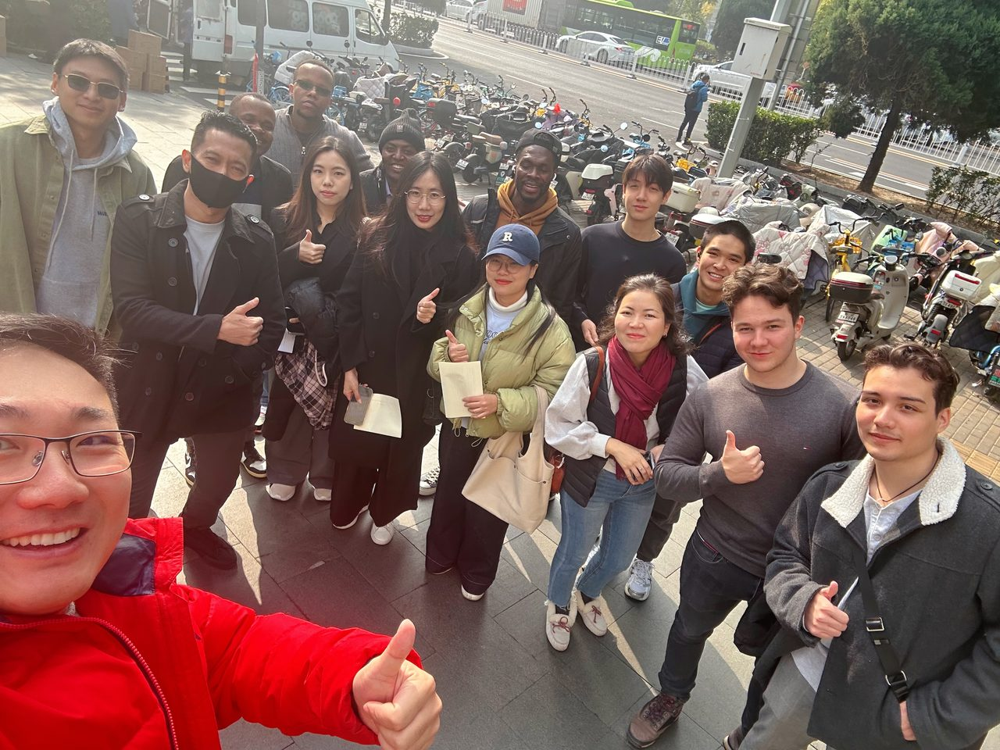
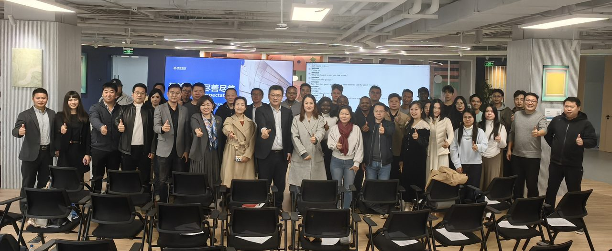
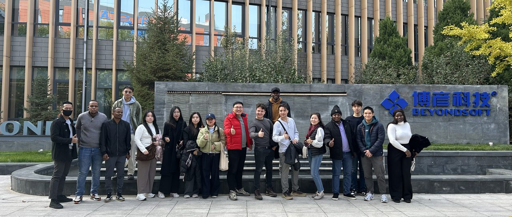

走进博彦科技（002649.SZ）
AI+数智技术赋能中国企业出海破局 / AI-Driven Digital Transformation for Global Expansion

活动背景
2025年10月25日，海鑫汇 GTN联合UIBE阿波罗投资俱乐部出海专委会、产投合作专委会共同主办"走进出海标杆上市企业·博彦科技全球总部"活动，聚焦AI+数智技术赋能、企业出海破局和跨境投资赛道三大核心议题，汇聚产业专家、资本领袖与UIBE校友力量。
开场：阿波罗投资俱乐部介绍
UIBE阿波罗投资俱乐部理事长、贝克资本董事长张克致开场辞。阿波罗俱乐部由来自700多家投资机构和企业的2000多位校友组成，现有八大专委会，覆盖出海发展、产投合作、大健康、新消费、硬科技、绿碳能源、数字经济及资本市场服务。
圆桌论坛：企业出海关键路径
出海实践圆桌论坛环节，博彦科技高级副总裁王鑫、UIBE阿波罗投资俱乐部理事长张克、UIBE阿波罗投资俱乐部出海专委会主任理事及WTCA世界贸易中心协会亚太商贸服务顾问委员会主席朱小兰展开对话，解析企业出海的关键路径与未来机遇。

企业出海趋势：从"单打独斗"到"生态联合"
王鑫借博彦科技三十年全球化经验，指出中国企业出海正经历三重转变：从"肉身建厂"到"AI赋能"，再到"生态共建"。
资本视角：跨境投资的"三研三好"原则
张克从PE投资逻辑出发，总结跨境投资需遵循"三研三好"原则，并以新能源汽车出海为例分享实战经验，强调企业要通过实地验证与合规落地，避免"自嗨式出海"。
资源网络：WTCA全球布局与本地化落地
朱小兰结合WTCA覆盖320余座城市的全球资源网络指出，企业出海首站需链接本地核心资源，跳出"降维打击"思维，以赋能本地产业升级为核心，助力东南亚等地区实现制造业数字化转型。
国际校友交流
活动邀请了20余位来自东南亚、中东、非洲等中国企业重点出海市场的国际学生参加，带来本地市场需求与政策洞察，与嘉宾进行交流。

参访：博彦科技智慧展厅
活动尾声，王鑫带领UIBE校友参观博彦科技智慧展厅，了解企业三十年成长历程与全球化布局，感受AI、大数据、物联网等技术在金融、高科技、互联网等行业的落地实践。博彦科技生态发展部的UIBE校友王博轩全程为海外校友提供讲解。